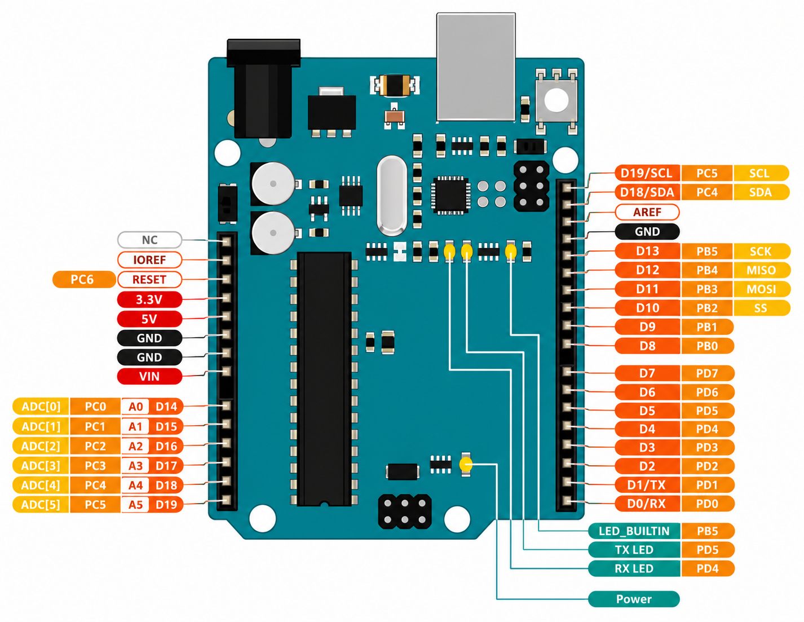

Sistem Mikrokontroler AVR & Arsitektur Referensi Pembelajaran
Pelajari anatomi chip ATmega328P, pemetaan pin I/O (Digital GPIO, PWM, Analog ADC), jalur catu daya (VIN, 5V, 3.3V, GND, Regulator), komponen pasif (resistor/kapasitor), serta proteksi hardware.
Chip ATmega328P, Clock 16 MHz, Flash, SRAM & EEPROM
Arduino Uno R3 ditenagai oleh mikrokontroler 8-bit AVR ATmega328P dari Microchip (Atmel). Papan ini memiliki arsitektur Harvard yang memisahkan memori program dan memori data untuk eksekusi instruksi berkecepatan tinggi.
Pewaktu eksternal presisi tinggi untuk eksekusi instruksi CPU.
Penyimpanan kode program (0.5 KB terpakai untuk Bootloader).
Memori volatile untuk menyimpan variabel sementara saat runtime.
Memori non-volatile untuk menyimpan data permanen (konfigurasi).
Anatomi Komponen Board Arduino Uno R3 Interaktif
Papan pengembangan Arduino Uno R3 memuat komponen aktif dan pasif. Klik komponen mana saja pada gambar vektor (seperti Resistor, Kapasitor, Fuse, Crystal, Chip, LED, dll.) untuk melihat rincian teknis lengkapnya.
Klik Komponen Arduino Uno R3
Silakan klik komponen mana saja pada gambar papan di sebelah kiri (termasuk Resistor, Kapasitor, Fuse, Chip ATmega328P, Crystal, Regulator, LED, atau Header Pin) untuk membuka rincian spesifikasi teknisnya.
- Pilih salah satu komponen pada vektor untuk menampilkan data spesifikasi.
Pemetaan Pinout Arduino Uno R3 (Digital GPIO, PWM, ADC & Power)
Pinout Arduino Uno R3 terbagi menjadi beberapa kelompok utama: Digital GPIO (0-13), Output PWM (~3, ~5, ~6, ~9, ~10, ~11), Analog Input ADC (A0-A5), serta Jalur Catu Daya (5V, 3.3V, VIN, GND, RESET).

Gambar: Pemetaan lengkap fungsi pin Arduino Uno R3 meliputi komunikasi I2C, SPI, Interrupt, dan fungsi alternatif ADC.
Inspector Kelompok Pin Arduino Uno R3
Pilih kategori fungsi pin di bawah untuk detailnyaArduino Uno R3 memiliki 14 pin I/O digital. Pin yang ditandai dengan simbol tilde (~3, ~5, ~6, ~9, ~10, ~11) mendukung fungsi PWM 8-bit (nilai 0-255) untuk kontrol kecerahan LED atau kecepatan motor DC. Pin 0 (RX) dan Pin 1 (TX) digunakan untuk komunikasi serial hardware.
Tabel Parameter Batas Teknis Arduino Uno R3
| Parameter / Pin | Spesifikasi Operasional | Keterangan Teknis & Batasan |
|---|---|---|
| Port USB (Type-B) | 5V DC (Maks 500mA) | Dilengkapi PTC Resetting Fuse 500mA untuk memproteksi USB PC. |
| Jack DC / Pin VIN | 7V - 12V DC (Batas 6V - 20V) | Rekomendasi ideal 9V DC. Tegangan diturunkan oleh LDO regulator. |
| Pin 5V Output | 5V DC (Tergantung sumber daya) | Menyuplai daya ke komponen/sensor 5V. Maks 500mA - 800mA. |
| Pin 3.3V Output | 3.3V DC (Maks 50 mA) | Dihasilkan oleh regulator LP2985 internal. Batas arus rendah (50mA). |
| Level Logika I/O | 0V (LOW) - 5V (HIGH) | Operasi logika murni 5V TTL. |
| Batas Arus I/O Pin | 20 mA (Maksimal absolut 40 mA) | Batas aman kontinu adalah 20 mA per pin. Arus total seluruh pin maks 200 mA. |
| Resolusi ADC (Analog) | 10-bit (0 - 1023) | 6 saluran input analog (A0 - A5) membaca tegangan 0 - 5V DC. |